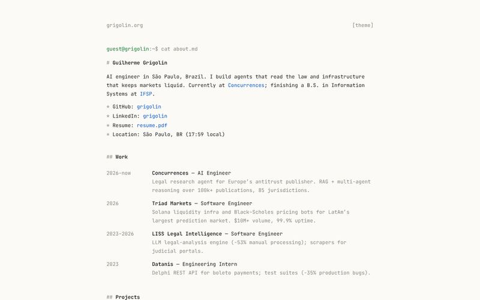
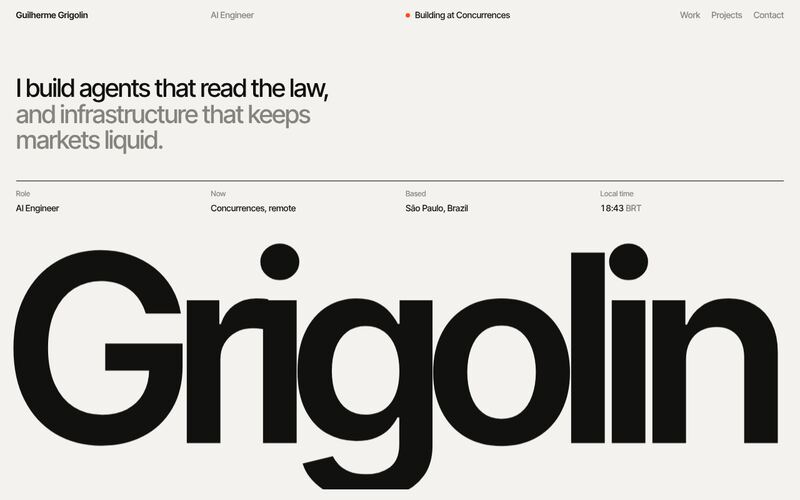
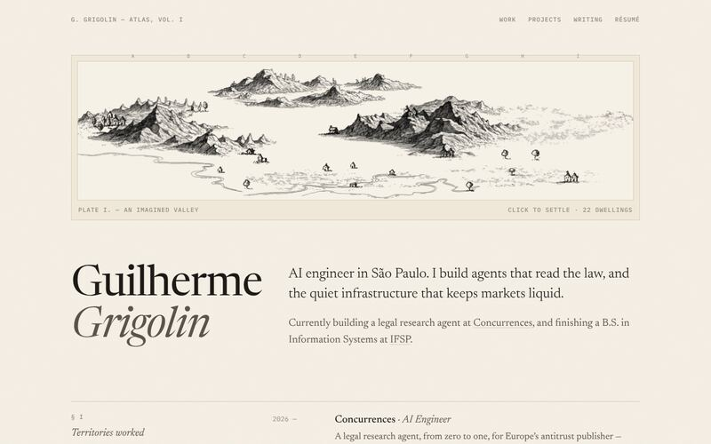
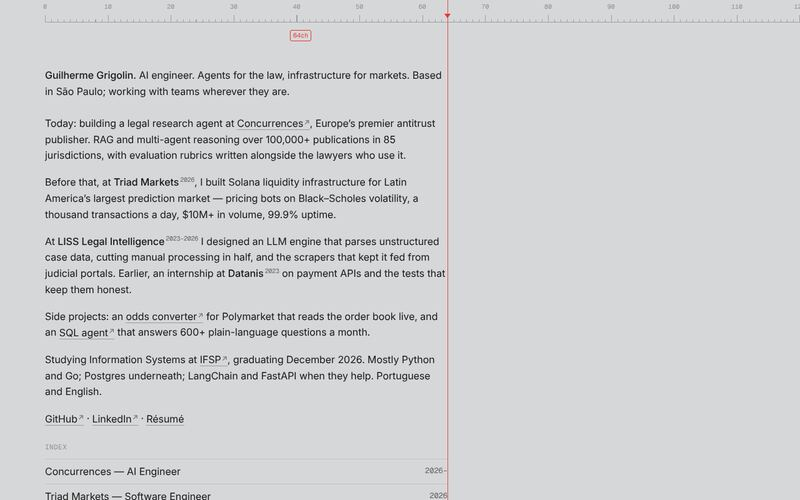
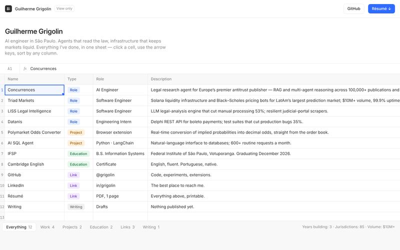
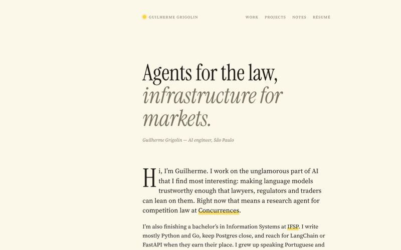

Design explorations
Round 2: four finalists, each refined. Inside a finalist, use the switcher at the bottom or press [ / ] to flip between them, and \ to hide it.
Finalists

Soft tiles with live widgets, plus a Customize mode to choose which widgets show.

Markdown in monospace, keyboard-first, with a working shell. There is a pixel-art valley hidden somewhere.

Swiss and loud. Your name fitted to the viewport, with work and projects as an expanding typographic index.

A small desktop with windows that open from and minimize into the dock, a command palette, and a home screen on phones.
Round 1 snapshots
The finalists as they were before this round, kept for reference.

Parked

Engraved valley plate, cartographic serif.

One column under a draggable ruler.

Everything in one spreadsheet.

Editorial essay with margin notes.
The current live site is unchanged at grigolin.org.